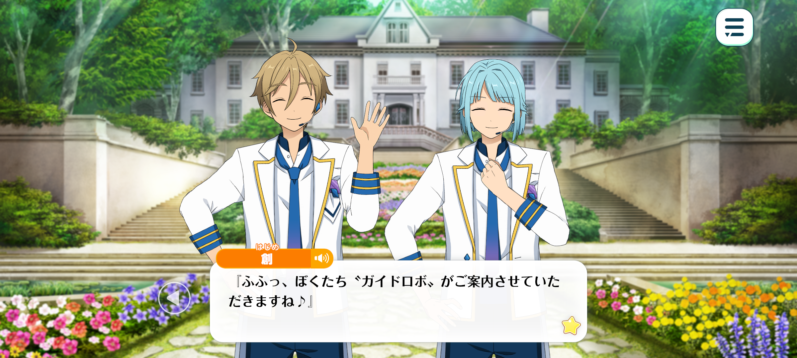
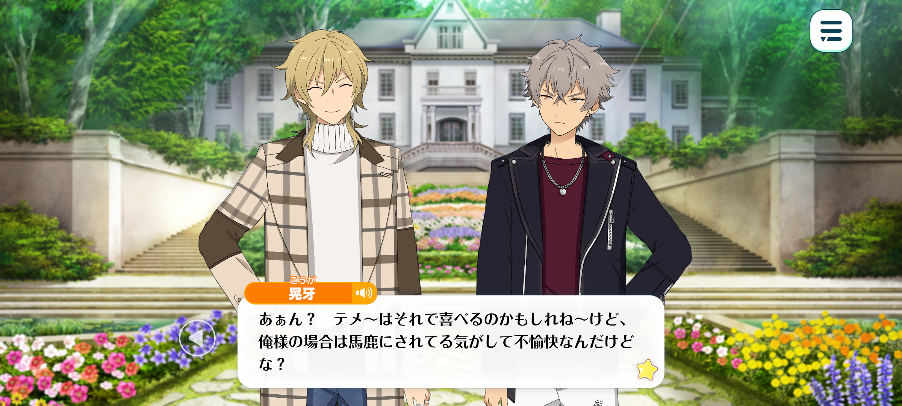
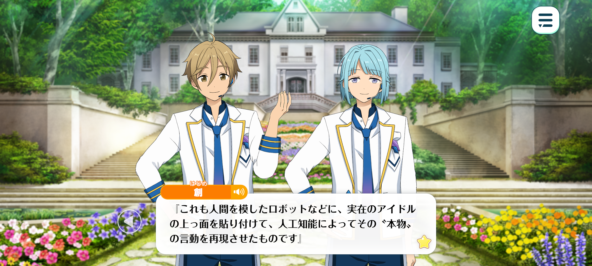

Flashback
BIOHAZARD – Chapter 3


Time: The next day
Location: At the AIIE Project's fourth experimental facility, commonly known as CRADLE

Tomoya: Welcome to CRADLE, the AIIE Project's fourth experimental facility!
Hajime: Fufu, we're your guide robots, and we'll be showing you around! ♪
Koga: The hell? Don’t just start spoutin’ a bunch of technical terms outta nowhere! This isn’t some sci-fi movie, y’know?
More importantly, what the hell’re you two doin’ here anyway, Ra*bits?
Tomoya: Ah, we're not Ra*bits!
Hajime: We were created as part of the AIIE Project. In other words, we're artificial idols!
Koga: ...?
Adonis: Are you really not Shino and Mashiro? Or are you pretending to be someone else as part of some sort of act?
Tomoya: Yup, we're not the actual people!
Hajime: We have absolutely no affiliations to any real people or organisations!
Koga: No connection to them...? Is that allowed? Even if you're just lookalikes, did you get permission from the real them?
Rei: Hmm. This isn't merely my usual old-man act speaking, but my honest impression... Technology truly has advanced by leaps and bounds. I simply cannot hope to keep up.
Just look around us. Those lookalikes of Shino-kun and Mashiro-kun are peculiar enough as it is, so I suppose this beautiful scenery before our eyes must be an illusion as well.
Kaoru: It feels like we've been tricked, doesn't it? This place is supposed to be indoors, and yet the moment we open the door, we're greeted by this beautiful scenery, with the sun shining overhead!
Adonis: This is what is known as a VR space, or virtual reality. We're being shown an artificial reality through those contact lens-shaped devices they've had us put in our eyes.
I do not think we should move around too much. We do not know where the actual walls or other obstacles might be.
Rei: Ow! Just as you said that, I hit my head!
Kaoru: Are you alright, old man~...?
Rei: I shall live... Judging by the exterior of the building, this space appears to be quite vast. In reality, however, it seems to be no larger than the academy's gymnasium.
As Adonis-kun quite rightly said, we should keep jumping and skipping around to a minimum.

Koga: You guys are all bigger than me, so watch where you're goin’, alright?
Kaoru: Fufu. That's why, when you line us all up, Koga-kun looks like such a wee little thing. The fans absolutely adore it, you know. They're all like, "Ooooh, he's so cute~!"
Koga: The hell? Maybe you're happy about it, but it feels like they're makin’ fun of me, and I don't appreciate it.
Every last one of you loves makin' a joke outta other people's insecurities, don'tcha?
Rei: Kukuku. In any case, we've come all this way simply because we were summoned, but what exactly is it that we're expected to do?
We've agreed to participate in this AIIE business at the agency's request, which is all well and good, but they haven't actually told us any of the details.
Hajime: Of course! We'll explain everything!
Tomoya: That's exactly what we're here for!
The AIIE Project, as its name suggests, is a project to "manufacture" artificial idols!
Koga: This sounds pretty damn suspicious...
Rei: That's quite the sort of wording Tenshouin-kun would be fond of, isn't it?
This is purely speculation on my part, of course, but I suspect he must have some sort of involvement in this project. Perhaps as an investor or sponsor.
Kaoru: Well, even so, isn't that preferable to being dragged into some experiment conducted by a shady private company we've never even heard of?
Rei: I suppose you have a point... Still, I can't quite wrap my head around it. What exactly is an artificial idol? What are they supposed to be?

Hajime: Of course! We'll answer that!
Tomoya: That's what we're here for as your guide robots!
Rei: Well, seeing as you aren't actually members of Ra*bits, I think I can already hazard a guess as to what these artificial idols are supposed to look like—
Hajime: That's right. As we mentioned earlier, we're artificial idols created as part of the AIIE Project.
Tomoya: Simply put, we artificial idols are copies modelled after real, existing idols.
Hajime: We're robots modelled after human beings, given the outward appearance of real idols, while AI is used to recreate the words and actions of those "originals".
Tomoya: So, at first glance, it would appear as though the original idol had simply been duplicated.
Hajime: However, with current technology, it's still impossible to reproduce them perfectly. What we can create are copies that resemble the originals, but aren't quite identical.
Tomoya: By conducting further experiments with your cooperation and continuing to improve our technology, eventually, even your fans—
Hajime: —No! We'll eventually be able to create perfect copies that even your own parents and siblings won't be able to distinguish from the originals!